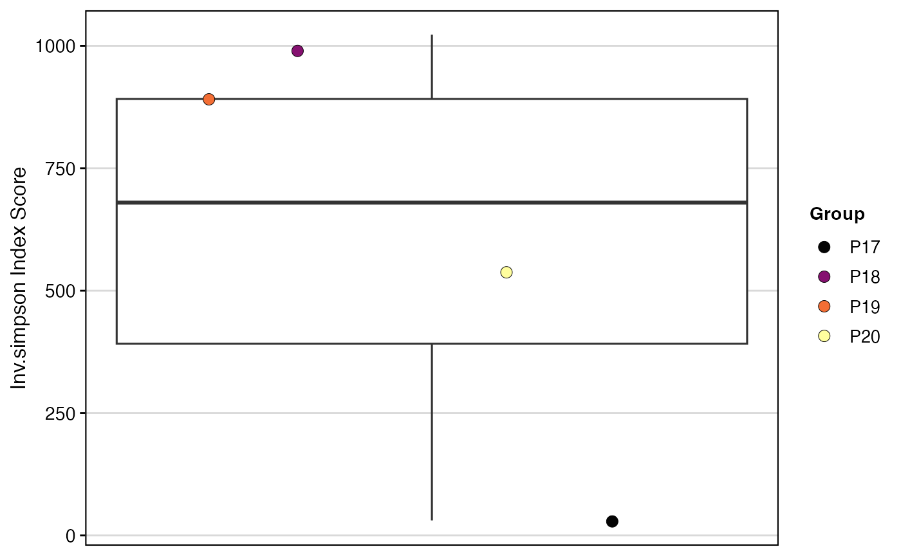
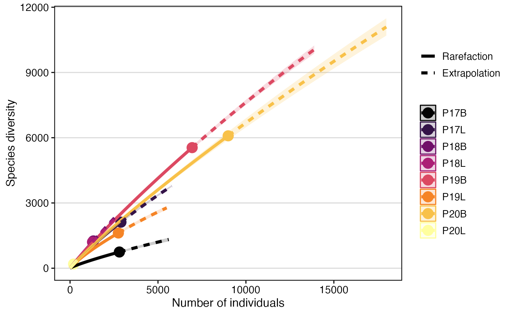
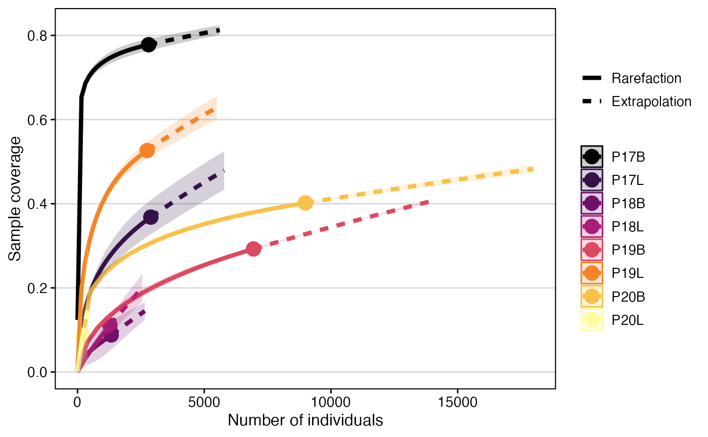
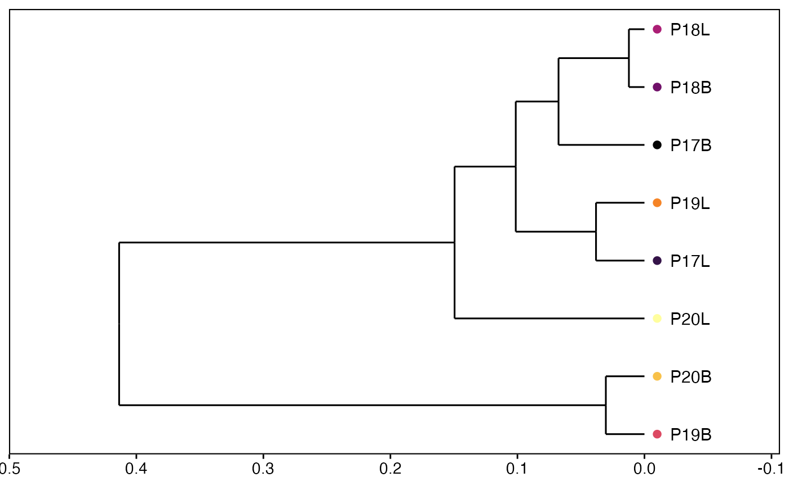

Comparing Clonal Diversity and Overlap
Compiled: February 24, 2024
Source:vignettes/articles/Clonal_Diversity.Rmd
Clonal_Diversity.RmdclonalDiversity
Diversity can also be measured for samples or by other variables. Diversity metrics calculated, include: “shannon”, “inv.simpson”, “norm.entropy”, “gini.simpson”, “chao1”, and “ACE”. Please see the manual for more information on each metric and the underlying calculations.
Inherent in diversity calculations is a bias for increasing diversity
with increasing repertoire size. clonalDiversity() will
automatically downsample to the smallest repertoire size and perform
bootstrapping to return the mean diversity estimates. If the output of
diversity values are strange or minimally variable, it is likely due to
a sample with small repertoire size.
n.boots
The number of calculations to perform (default =
100).
return.boots
- TRUE: Return all the calculations.
- FALSE: Return only the mean values (default).
skip.boots
Skip the bootstrapping calculations.
clonalDiversity(combined.TCR,
cloneCall = "gene")
There are 2 options for grouping in clonalDiversity()
and it is important to understand the difference.
group.by
- Reorganize the clone information into new groups that the calculation will be based on.
x.axis
- Keep the organization of the clone information the same, but will plot along the x-axis for improved visibility or grouping.
combined.TCR <- addVariable(combined.TCR,
variable.name = "Patient",
variables = c("P17", "P17", "P18", "P18",
"P19","P19", "P20", "P20"))
clonalDiversity(combined.TCR,
cloneCall = "gene",
group.by = "Patient")
clonalDiversity(combined.TCR,
cloneCall = "gene",
x.axis = "Patient")
As a default, clonalDiversity() will return all the
metrics calculated - “shannon”,
“inv.simpson”, “norm.entropy”,
“gini.simpson”, “chao1”, and
“ACE”. Selecting a single or a subset of these methods
using the metrics parameter.
#Return only a subset of metrics
clonalDiversity(combined.TCR,
metrics = c("shannon", "ACE"),
cloneCall = "gene",
n.boots = 20)
clonaRarefaction
We can also use Hill numbers to estimate the rarefaction, or estimating species richness, using the the abundance of clones across groupings. Underlying the rarefaction calculation is the use of observed receptor of abundance to compute diversity.
hill.numbers
- 0 - species-richness
- 1 - Shannon Diversity
- 2 - Simpson Diversity
plot.type
- 1 - sample-size-based rarefaction/extrapolation
- 2 - sample completeness curve
- 3 - coverage-based rarefaction/extrapolation curve
This function relies on the iNEXT with the accompanying manuscript. Like the other wrapping functions in scRepertoire, please cite the original work. The sample completeness curve (plot.type = 2), may not show full sample coverage due to the size/diversity of the input data.
Rarefaction using Species Richness (q = 0)
clonalRarefaction(combined.TCR,
plot.type = 1,
hill.numbers = 0,
n.boots = 2)
clonalRarefaction(combined.TCR,
plot.type = 2,
hill.numbers = 0,
n.boots = 2)
clonalRarefaction(combined.TCR,
plot.type = 3,
hill.numbers = 0,
n.boots = 2)
Rarefaction using Shannon Diversity (q = 1)
clonalRarefaction(combined.TCR,
plot.type = 1,
hill.numbers = 1,
n.boots = 2)
clonalRarefaction(combined.TCR,
plot.type = 2,
hill.numbers = 1,
n.boots = 2)
clonalRarefaction(combined.TCR,
plot.type = 3,
hill.numbers = 1,
n.boots = 2)
clonalSizeDistribution
Another method for modeling the repertoire distribution is a discrete gamma-GPD spliced threshold model, proposed by Koch et al. The spliced model models the repertoire and allows for the application of a power law distribution for larger clonal-expanded sequences and a Poisson distribution for smaller clones. After fitting the models, repertoires can be compared using Euclidean distance.
If using this function, please read/cite Koch et al. and check out the powerTCR R package.
clonalSizeDistribution(combined.TCR,
cloneCall = "aa",
method= "ward.D2")clonalOverlap
If you are interested in measures of similarity between the samples
loaded into scRepertoire, using clonalOverlap() can assist
in the visualization.
The underlying clonalOverlap() calculation varies by the
method parameter, more information on the exact
calculations are available in the manual.
method
- “overlap” - overlap coefficient
- “morisita” - Morisita’s overlap index
- “jaccard” - Jaccard index
- “cosine” - cosine similarity
- “raw” - exact number of overlapping clones
clonalOverlap(combined.TCR,
cloneCall = "strict",
method = "morisita")
clonalOverlap(combined.TCR,
cloneCall = "strict",
method = "raw")